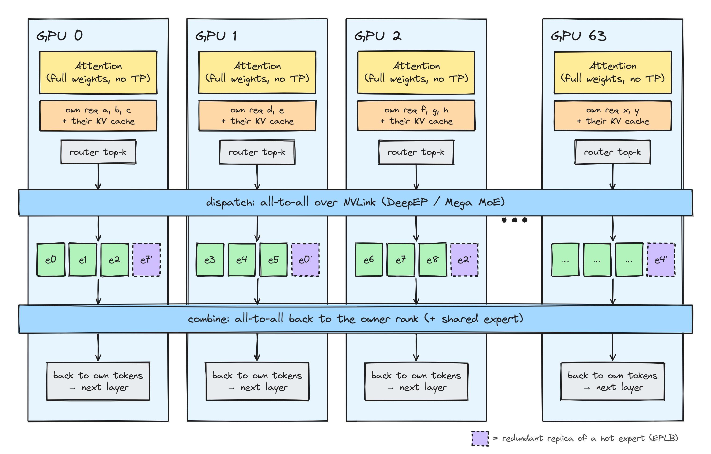
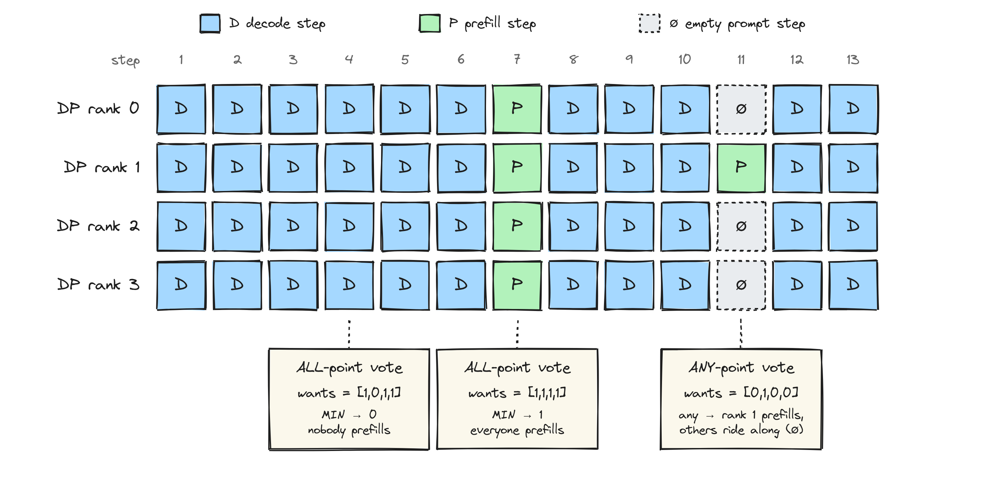
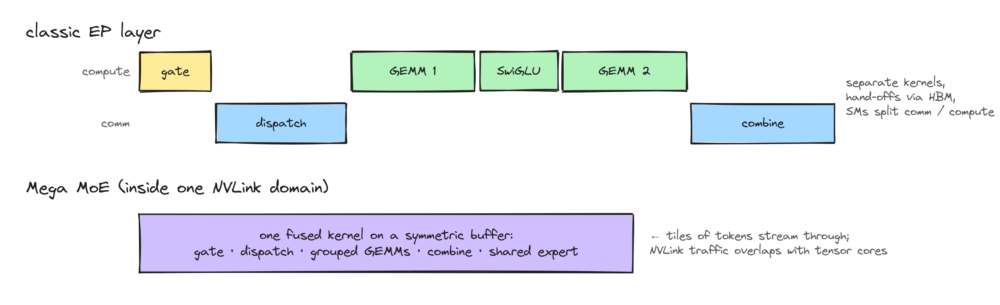
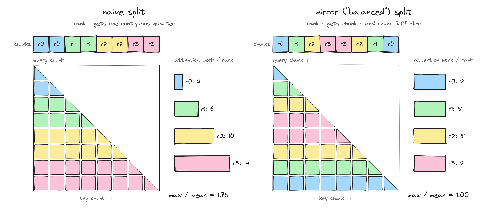
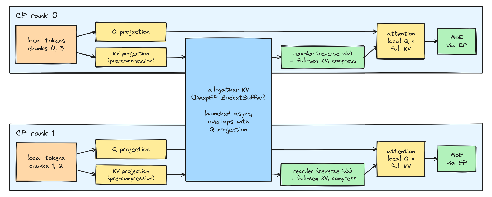
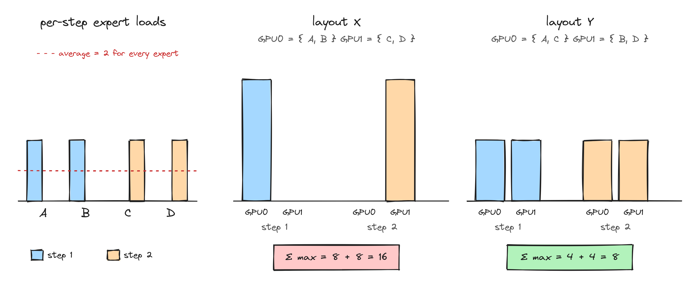
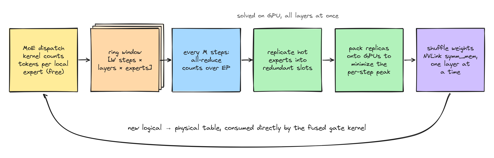

Inference systems · Reading notes
Reading DeepInfer: Attention DP, Balanced CP and Expert Load Balancing
Contents
DeepSeek open-sourced DeepInfer, the inference framework behind the DeepSeek V4.1 Flash service. According to the accompanying deployment Q&A, a single cluster serves 155 trillion tokens per day at roughly US$38 of revenue per GPU-hour at off-peak pricing [1]. The README says DeepInfer "was originally built primarily on vLLM", with ideas taken from SGLang and TensorRT-LLM. So it is a good case study in what a team does once it owns one model, one family of hardware and one very large deployment, and can stop being general.
This post covers the parallelism layer: how attention and MoE are split across GPUs, how DP ranks stay in lockstep, how context parallelism keeps causal attention balanced, and how expert load balancing (EPLB) works. I read the code at the initial public release and quote it directly. Where I compare with vLLM [6], I mean upstream vLLM as I know it. vLLM moves quickly, so check its current docs before relying on a specific claim. DSpark speculative decoding, the zero-overhead scheduler and batch-invariant inference are left for a second post.
The shape of the problem
DeepSeek V4.1 Flash is a fine-grained MoE: hundreds of routed experts per layer, a few active per token, plus a shared expert. Decode is limited by memory bandwidth, and most bytes read per step are expert weights. The way to make each weight byte do more work is to spread experts over many GPUs, so that each GPU holds only a few experts and every expert sees a large batch of tokens gathered from the whole instance. That is wide expert parallelism.
The Q&A gives the production layout [1]:
| Stage | Parallelism | Rule of thumb |
|---|---|---|
| Prefill | EP 2–8 / DP 2–8 | the smallest EP that fits in HBM; ordinary 8-GPU machines |
| Decode | EP 64–128 / DP 64–128 | the largest EP available; one 64–128-GPU supernode (one scale-up domain) |
| Vision encoder | 1 GPU | cheaper GPUs are fine |
| TP, CP | not used in production yet | CP is implemented and ships in the release |
Two things stand out compared with a typical vLLM deployment. There is no tensor parallelism anywhere: attention is replicated and the batch is split instead. And the EP group is sized to fit inside one NVLink domain, which is what makes the fused Mega MoE kernel possible (more on that below).
Attention DP + MoE EP
One decoder layer, 64 GPUs
Every GPU holds a full copy of the attention weights and a disjoint set of requests together with their KV cache. Attention therefore needs no communication at all. Before the MoE block, each GPU routes its own tokens, sends them to the GPUs that host the chosen experts (dispatch), and receives the results back (combine). Because #DP = #EP, the same 64 ranks act as 64 attention replicas and as 64 expert shards.

The process groups are built in parallel_state.py with einops over a flat rank range. The rank layout is (dp cp), and the EP group is contiguous blocks of ep_size ranks, so in the common case EP spans the whole world. CP ranks of a sequence are therefore also distinct EP ranks. I come back to why that matters in the CP section.
dp_ranks = rearrange(ranks, "(replica dp cp) -> (replica cp) dp", dp=dp_size, cp=cp_size)
cp_ranks = rearrange(ranks, "(dp cp) -> dp cp", cp=cp_size)
ep_ranks = rearrange(ranks, "(edp ep) -> edp ep", ep=ep_size) # EP == world when ep_size == worldKeeping DP ranks in lockstep
The catch with attention DP is that the MoE all-to-all is a collective. Every rank must enter it in every layer of every step, whether or not it has work. So all 64 ranks have to agree, every step, on what kind of step they are running.
vLLM solves this by letting a rank with no requests run a dummy forward pass so the collectives still line up, and its scheduler mixes prefill chunks and decode tokens in the same batch. DeepInfer's production setup sidesteps most of it: prefill and decode run on separate engines (P/D disaggregation), so a decode engine only ever runs decode steps. For the NORMAL engine that does both, the C++ scheduler runs a small vote over the DP group to pick the step type.

// ALL point: everyone must want prefill. ANY point: one rank is enough.
bool want = (get_gpu_cache_usage() <= GPU_CACHE_PREFILL_WATERMARK) && _has_prefill_waiting();
if (is_any_point) do_prefill = (_dp_allreduce(want ? 0 : 1, ReduceOp::MIN) == 0);
else do_prefill = (_dp_allreduce(want ? 1 : 0, ReduceOp::MIN) == 1);
...
// second vote: did anyone actually schedule something? (slots or KV blocks may be full)
bool any_scheduled = (_dp_allreduce(outputs ? 0 : 1, ReduceOp::MIN) == 0);
if (!any_scheduled) return _schedule_decode(acquire);
if (outputs) return outputs;
return _make_outputs({}, true, 0, {}, {}, {}, 0); // ride along with an empty prompt stepThree details are easy to miss:
- The ALL points stop one rank with a short queue from dragging 63 others into near-empty prefill steps. The ANY points cap how long an isolated rank's prefill can wait.
- The second vote prevents a livelock. A prompt step resets the decode counter. If every rank "wanted" prefill but none could schedule one (KV blocks full), forcing an empty prompt step would land on the next vote point again, forever.
- With the zero-overhead scheduler enabled (
DEEPINFER_ZERO_OVERHEAD_SCHEDULING), these all-reduces go over a gloo CPU group instead of NCCL, so the vote never forces a host–device sync in the middle of the overlapped CPU/GPU pipeline.
Two MoE paths: DeepEP and Mega MoE
DeepseekMoE in v4_modules/mlp.py has two forward paths. The classic one calls DeepEP's [4] EPBuffer.dispatch, runs two grouped GEMMs from DeepGEMM [5] with a fused SwiGLU + per-token FP8 cast between them, and calls combine. The shared expert runs while combine is in flight, inside a limit_num_sms(...) block, so communication and compute split the SMs instead of fighting over them. The shared expert's output is passed as the bias argument of combine and is added for free.
The second path is used whenever the EP group fits in one NVLink domain: deep_gemm.fp8_fp4_mega_moe (or bf16_mega_moe) works on a symmetric-memory buffer and fuses gate output, dispatch, both expert GEMMs, combine and optionally the shared expert into one kernel. The Q&A is direct about it: "regardless of EP size or batch size, Mega MoE is significantly faster than unfused MoE" [1]. Activations are FP8 and routed-expert weights are MXFP4.

use_mega_moe is set when the EP group is within the physical NVLink domain).This is the clearest difference from vLLM's design. vLLM keeps all-to-all as a pluggable backend (DeepEP high-throughput and low-latency modes, pplx-kernels and others) so that it can run on many cluster shapes. DeepInfer fixes the deployment shape first (decode EP fits in one scale-up domain) and then uses a kernel that only works under that assumption.
Balanced context parallelism
For long prompts, DeepInfer can split one sequence's prefill across a CP group. The question is how to cut the sequence.
Why a naive split is unbalanced
Under a causal mask, query chunk i attends to i key chunks plus half of its own. If rank r takes the r-th contiguous slice, the last rank does several times the attention work of the first, and the whole step waits for it. The standard fix (used in Megatron-style CP and in Ring/Zigzag attention [7]) is to cut the sequence into 2·CP chunks and give rank r chunk r plus its mirror, chunk 2·CP−1−r. A cheap row is paired with an expensive one, so every rank gets the same total.

Try other CP sizes:
With the naive split, max/mean is (2·CP−1)/CP, which approaches 2 as CP grows. Half of the group's attention time is wasted waiting.
The mirror index, computed on the GPU
Batches are variable length, so every sequence in the batch is cut separately. prepare_cp_mirror is a TileLang kernel that, in one launch, computes for each rank a gather index from the packed varlen layout into the rank's mirror layout (mirror_cp_index, with −1 for padding), the inverse index, and the per-token key ranges ks/ke for every compression ratio used by the sparse/compressed attention. The core of the mapping is one line:
ps = ceil(seqlen_q / (2 * cp_size)) # chunk size for this sequence
half = off // ps # 0 = first chunk, 1 = mirrored chunk
blk = cp_rank + half * (2*cp_size - 1 - 2*cp_rank) # r or 2·CP−1−rOn the scheduler side, the comment in scheduler.hpp notes that seqlen_q is aligned to cp_size * 2 ("*2 is mirror cp"), so the chunks divide evenly.
What moves between CP ranks
Queries stay local. Each rank computes Q only for its own two chunks and needs the full sequence's keys and values. DeepInfer all-gathers the KV side through a DeepEP BucketBuffer wrapped in a small CPManager. Two choices are specific to V4's attention:
- V4 compresses the KV sequence (several compression ratios plus a sliding window). Compression must see tokens in their original order, so what is gathered is the pre-compression KV projection. Each rank then reorders it with the reverse index and runs the compressor on the full sequence. The metadata comment says it directly: "With CP, compression runs on the original full sequence, so no reordering is needed."
- The all-gather is launched before the Q projection and waited on after it, so the communication hides behind the projection GEMMs. The gathered tensors alias the bucket buffer, which is reused by the next session, so nothing extra is allocated per layer.

From MoE's point of view nothing changes. Each CP rank routes the tokens it owns (there is even a CP-reordered copy of the gate's force-random mask, gate_force_random_cp), and since CP ranks are different EP ranks, a CP group looks like a few more DP ranks to the experts. CP adds no new collective to the MoE block.
The deployment Q&A says CP is not used in production yet [1]: prefill machines run small EP/DP groups, and long-context traffic is handled by length-tiered load balancing plus a 3FS-backed KV cache that keeps prefixes for days. Balanced CP is in the release, but treat it as available rather than battle-tested.
EPLB: expert-parallel load balancing
Wide EP only pays off if no GPU's experts are much hotter than the rest; the all-to-all completes when the slowest rank finishes. DeepInfer, like DeepSeek's earlier open-source EPLB [3] and vLLM's port of it, gives each GPU a few redundant expert slots that host replicas of hot experts, and periodically re-solves which replicas exist and where they live.
| Redundant slots / GPU | Stats window | Re-plan every | Measured moe_lb | |
|---|---|---|---|---|
| Prefill | ≥ 4 | 100 steps | 1,000 steps | 1.074 (EP4) / 1.045 (EP2) |
| Decode | ≥ 1 | 1,000 steps | 10,000 steps | 1.090 (EP64) |
Here moe_lb is slowest-rank load over mean load [1]. The minimum number of extra slots is rounded up so that the total number of physical experts divides evenly by ep_size (resolve_num_extra_experts). At EP64 that works out to 7 routed experts per GPU.
The objective counts per-step peaks
This is the part of DeepInfer's EPLB I found most interesting. The classic algorithm sums each expert's load over the window and balances those totals. DeepInfer keeps the per-step history and optimizes the quantity that actually sets latency, the sum over steps of the busiest GPU's load:
# the objective is independent per layer; for a fixed layer, place its physical experts on ranks
# so that sum_{step i} max_{rank j} (sum of loads at step i of experts placed on rank j) is smallThe difference shows up when experts fire together. In Fig. 6, experts A and B are busy in one step and C and D in the next, perhaps because the batch shifts from one kind of traffic to another. All four have the same average, so an averages-only planner sees layouts X and Y as equally good. Under the per-step objective, X costs twice as much as Y.

Both greedy stages in rebalance_experts_global use this objective:
- Replication. For each redundant slot, try giving one more replica to each logical expert, and keep the choice that minimizes the sum over steps of the maximum per-replica load. The code computes this for all candidates at once with a
scattertrick: replacing only the argmax entry is enough, because adding a replica to any other expert leaves the max unchanged. - Placement. Sort physical replicas by load, heaviest first. For each one, try every rank with free capacity, add the replica's per-step load vector to that rank's history, and keep the rank that minimizes
Σ_step max(peak, candidate). Ties go to the lowest rank ID.
Both loops are written as batched tensor ops over [layers, ranks, steps], so all MoE layers are solved in one pass on the GPU instead of one Python loop per layer.
The loop around it

deepinfer/model_executor/eplb/.- Statistics are free. DeepEP's dispatch and the Mega MoE kernel both accept
cumulative_local_expert_recv_stats=expert_countand bump the counters as tokens arrive. No extra kernel and no extra sync. Each step's counts are copied into a ring buffer of shape[W, layers, local_experts]and reset. - Cold start is shortened. The first re-plan happens after a quarter of the interval rather than a full one, to correct the arbitrary initial layout early.
- The table goes straight into the gate. The fused gate kernel (
deep_gemm.bf16_mega_gate) takeslogical_to_physical_mapandlogical_countand emits physical expert IDs directly, so choosing among replicas costs nothing extra in the hot path. - Weights move over symmetric memory. Inside an NVLink domain, each rank copies its current expert weights into a one-layer symmetric-memory mirror. After a barrier, every rank pulls the experts it needs directly from a peer's mirror. When several ranks hold a needed expert,
_paired_senderspreads the receivers evenly across them. The mirror holds only one layer and is reused layer by layer, which keeps the extra memory small. Outside one domain it falls back to batched NCCL P2P with the same pairing. - Prefill and decode differ. In a NORMAL engine, re-planning can be skipped on prefill steps or deferred until right after one (
DEEPINFER_REARRANGE_AFTER_PREFILL_IN_NORMAL_ENGINE), so prefill's very different routing does not distort the decode layout.
The fault-tolerance story connects here as well. In a wide-EP instance, one bad GPU takes down the whole communication domain, so on restart the instance takes whatever number of healthy GPUs it gets as its new EP size [1]. Since the extra-slot count is recomputed to divide ep_size, EPLB adapts to that size without manual tuning.
Side by side with vLLM
| Concern | DeepInfer | vLLM (upstream, as I know it) |
|---|---|---|
| Attention split | DP only, no TP; full attention weights on every GPU | TP or DP; DP attention + EP is an option for MoE models |
| Idle DP ranks | P/D disaggregated engines; NORMAL engine votes on step type and runs empty prompt steps | dummy forward passes; mixed prefill/decode batches |
| MoE communication | DeepEP v2 buffers; fused Mega MoE kernel when EP fits one NVLink domain | pluggable all-to-all backends (DeepEP HT/LL, pplx, …) |
| Context parallel | mirror-split prefill CP; gather pre-compression KV, overlapped with Q projection | context-parallel support has been evolving (e.g. decode CP for MLA); check current docs |
| EPLB statistics | counted inside the dispatch kernel; per-step history kept | per-step counts summed over a sliding window |
| EPLB objective | minimize Σstep maxGPU load, for both replication and placement | DeepSeek EPLB algorithm on window-aggregated loads |
| Weight shuffle | pull from symmetric-memory mirror, one layer at a time; NCCL P2P fallback | NCCL P2P exchange |
The pattern across the table is the same. vLLM has to run well on any model, any parallel shape and any cluster, so its parts are general and pluggable. DeepInfer fixes those choices up front: one model family, P/D disaggregation, decode EP inside one scale-up domain. Each fixed choice then opens up a cheaper mechanism: no TP, a step vote instead of mixed batching, a fused MoE kernel, statistics that come for free, and symmetric-memory weight moves.
What's next
The parallelism layer is only half of what makes the decode numbers work. Part 2 will cover the other three features in the README: DSpark with confidence-scheduled variable-length verification (which cuts verified tokens per step from 5 to about 3.2–4.4 at almost the same accepted length), the zero-overhead batch scheduler that overlaps schedule(N+1) with forward(N), and batch-invariant inference for deterministic outputs.
Citation
Please cite this work as:
@article{zhou2026deepinfer,
title = "Reading DeepInfer: Attention DP, Balanced CP and Expert Load Balancing",
author = "Zhou, Ziqi",
journal = "ziqi-zhou02.github.io",
year = "2026",
month = "Oct"
}References
- DeepSeek-AI. "DeepSeek V4.1 Flash Inference Deployment Q&A." DeepInfer repository, 2026.
- DeepSeek-AI. "DeepInfer: High-performance, large-scale inference framework for DeepSeek models." GitHub, 2026.
- DeepSeek-AI. "Expert Parallelism Load Balancer (EPLB)." GitHub, 2025.
- DeepSeek-AI. "DeepEP: an efficient expert-parallel communication library." GitHub, 2025.
- DeepSeek-AI. "DeepGEMM: clean and efficient FP8 GEMM kernels." GitHub, 2025.
- Kwon et al. "Efficient Memory Management for Large Language Model Serving with PagedAttention." SOSP 2023.
- Liu et al. "Ring Attention with Blockwise Transformers for Near-Infinite Context." arXiv:2310.01889, 2023.